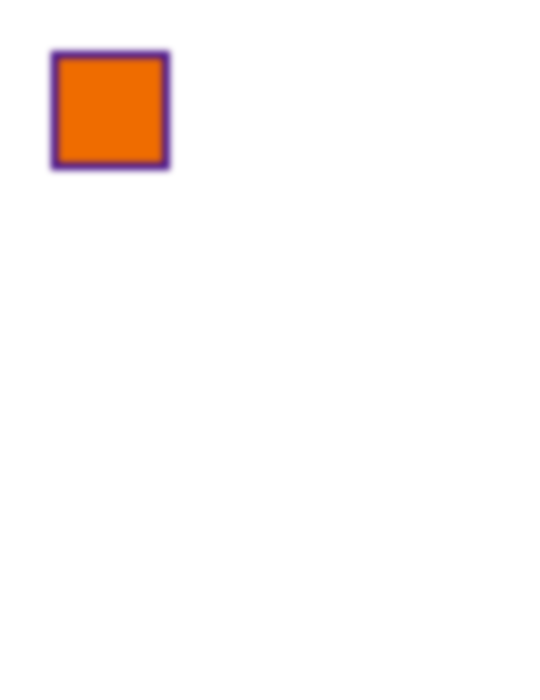
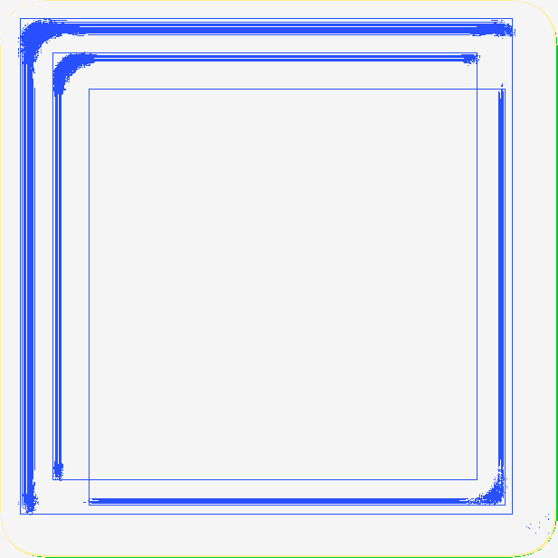
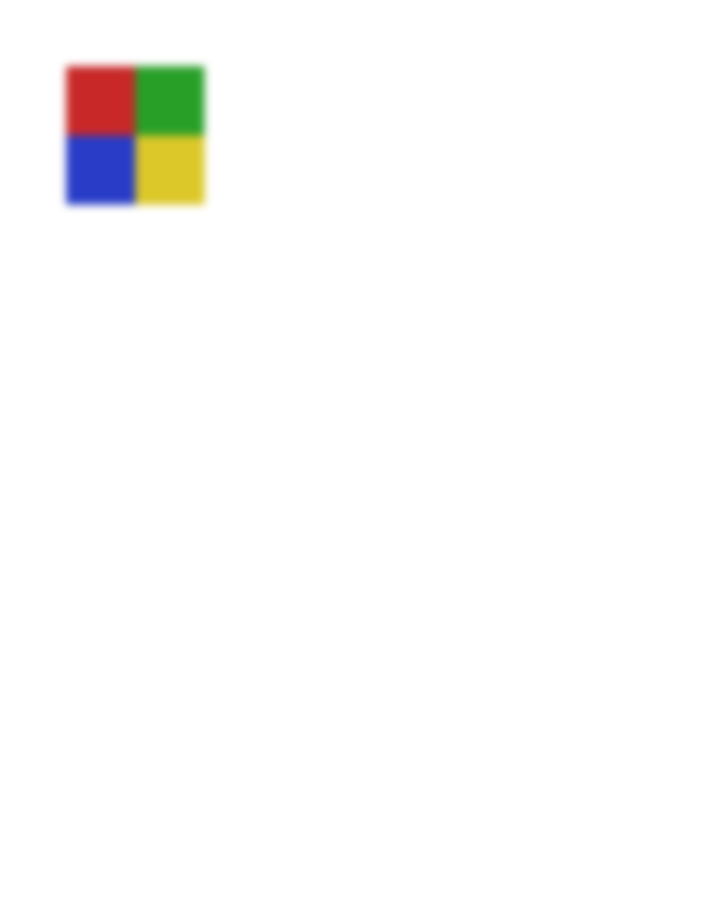
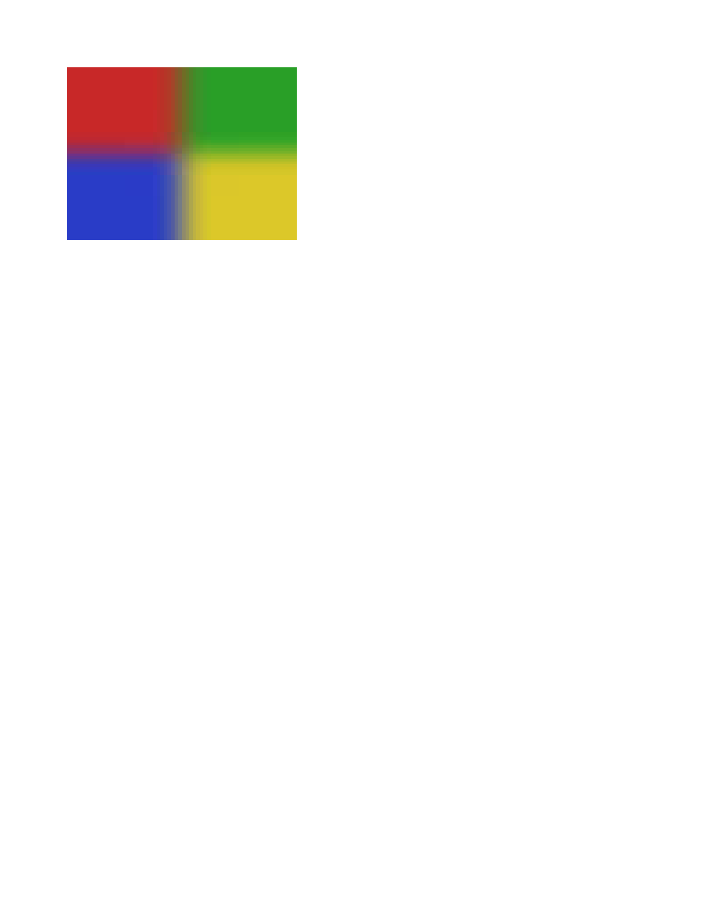
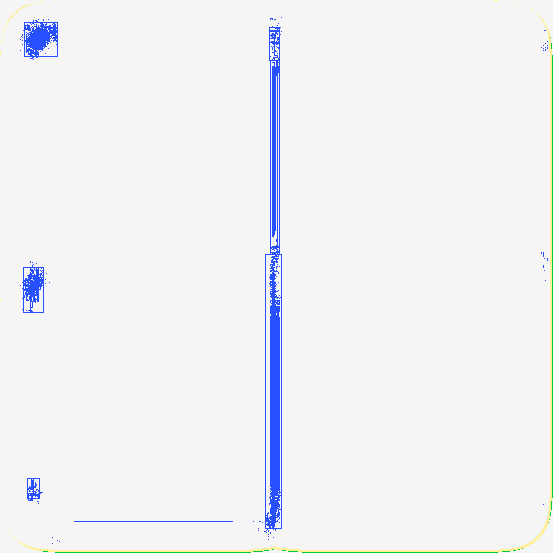
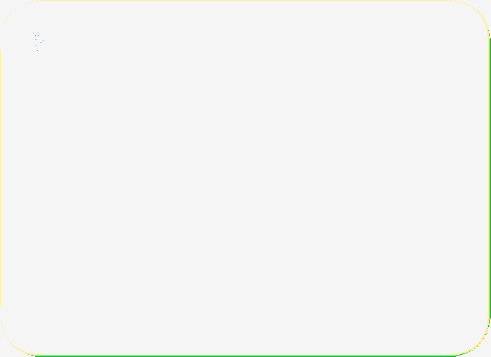

PARTIAL 6.90% filter-on-box-blur · on-box-vs-img · REALColorValue−1.0px Rextra 0.3%ΔE 2.8

Chrome refironpress
classed diffdiff colours:MissingExtraColorErrGeomShiftAA edgeMatchAA / edge-jitter = cross-rasterizer measurement ceiling, not a bug.
why: fill recolour ΔRGB(+5,+8,+4) (ΔE 2.8)
filter: blur() on a bordered solid box: should soften both fill and border edge, contrasting with the img-raster blur path.
regions (6)
| class | bbox (CSS px) | area% | magnitude | reason |
|---|
| ColorValue | 7,6 → 181,182 | 3.27 | ΔE 2.8 ΔRGB(7,9,5) | fill recolour ΔRGB(+7,+9,+5) (ΔE 2.8) |
| ColorValue | 19,19 → 169,170 | 1.62 | ΔE 2.7 ΔRGB(-5,-1,6) | fill recolour ΔRGB(-5,-1,+6) (ΔE 2.7) |
| ColorValue | 31,31 → 179,179 | 1.45 | ΔE 2.8 ΔRGB(5,4,-3) | fill recolour ΔRGB(+5,+4,-3) (ΔE 2.8) |
| Extra | 197,16 → 197,184 | 0.14 | | extra paint where Chrome is blank (0.1%) |
| Extra | 16,197 → 181,197 | 0.14 | | extra paint where Chrome is blank (0.1%) |
| ColorValue | 31,12 → 166,12 | 0.11 | ΔE 2.5 ΔRGB(6,8,4) | fill recolour ΔRGB(+6,+8,+4) (ΔE 2.5) |
source · cases/filters/filter-on-box-blur.html
1<!DOCTYPE html>
2<html lang="en">
3<head>
4<meta charset="utf-8">
5<title>filter blur on box with border content</title>
6<style>
7 * { margin: 0; box-sizing: border-box; }
8 html, body { background: #ffffff; }
9 .frame { padding: 40px; }
10 /* Box with a thick border + solid fill: blur should soften BOTH the fill and
11 the border edge. ironpress only blurs background/image rasters, so the
12 bordered foreground edge is the discriminator vs filter-on-img. */
13 .box {
14 width: 180px;
15 height: 180px;
16 background-color: #ef6c00;
17 border: 12px solid #4a148c;
18 filter: blur(5px);
19 }
20</style>
21</head>
22<body>
23 <div class="frame"><div class="box"></div></div>
24</body>
25</html>
PARTIAL 1.97% filter-blur-img · on-img-raster · REALColorValue−1.0px Rextra 0.3%ΔE 2.8

Chrome ref
ironpress
classed diffdiff colours:MissingExtraColorErrGeomShiftAA edgeMatchAA / edge-jitter = cross-rasterizer measurement ceiling, not a bug.
why: fill recolour ΔRGB(-1,-3,+3) (ΔE 2.8)
filter: blur() applied to an <img> raster; blur of image rasters is the implemented path.
regions (6)
| class | bbox (CSS px) | area% | magnitude | reason |
|---|
| ColorValue | 85,81 → 90,169 | 0.80 | ΔE 2.9 ΔRGB(-4,-3,4) | fill recolour ΔRGB(-4,-3,+4) (ΔE 2.9) |
| ColorValue | 86,19 → 89,81 | 0.31 | ΔE 2.7 ΔRGB(4,-3,0) | fill recolour ΔRGB(+4,-3,+0) (ΔE 2.7) |
| ColorValue | 8,7 → 18,18 | 0.21 | ΔE 2.8 ΔRGB(3,11,11) | fill recolour ΔRGB(+3,+11,+11) (ΔE 2.8) |
| ColorValue | 7,85 → 14,100 | 0.15 | ΔE 2.7 ΔRGB(8,7,0) | fill recolour ΔRGB(+8,+7,+0) (ΔE 2.7) |
| Extra | 177,18 → 177,159 | 0.14 | | extra paint where Chrome is blank (0.1%) |
| Extra | 18,177 → 80,177 | 0.06 | | extra paint where Chrome is blank (0.1%) |
source · cases/filters/filter-blur-img.html
1<!DOCTYPE html>
2<html lang="en">
3<head>
4<meta charset="utf-8">
5<title>filter blur on img</title>
6<style>
7 * { margin: 0; box-sizing: border-box; }
8 html, body { background: #ffffff; }
9 .frame { padding: 40px; }
10 img.t {
11 width: 160px;
12 height: 160px;
13 image-rendering: pixelated;
14 filter: blur(5px);
15 }
16</style>
17</head>
18<body>
19 <div class="frame"><img class="t" alt="" src=""></div>
20</body>
21</html>
PARTIAL 0.41% filter-blur-box · on-box-background · REALExtra−1.3px Rextra 0.4%ΔE 2.6
Chrome refironpress
classed diff diff colours:MissingExtraColorErrGeomShiftAA edgeMatchAA / edge-jitter = cross-rasterizer measurement ceiling, not a bug.
why: extra paint where Chrome is blank (0.4%)
filter: blur() applied to a box with a solid background-color fill.
regions (2)
| class | bbox (CSS px) | area% | magnitude | reason |
|---|
| Extra | 220,17 → 220,143 | 0.22 | | extra paint where Chrome is blank (0.2%) |
| Extra | 16,160 → 205,160 | 0.17 | | extra paint where Chrome is blank (0.2%) |
source · cases/filters/filter-blur-box.html
1<!DOCTYPE html>
2<html lang="en">
3<head>
4<meta charset="utf-8">
5<title>filter blur on box</title>
6<style>
7 * { margin: 0; box-sizing: border-box; }
8 html, body { background: #ffffff; }
9 /* Padding so blurred edges stay on-page. */
10 .frame { padding: 40px; }
11 .box {
12 width: 200px;
13 height: 140px;
14 background-color: #1565c0;
15 filter: blur(6px);
16 }
17</style>
18</head>
19<body>
20 <div class="frame"><div class="box"></div></div>
21</body>
22</html>